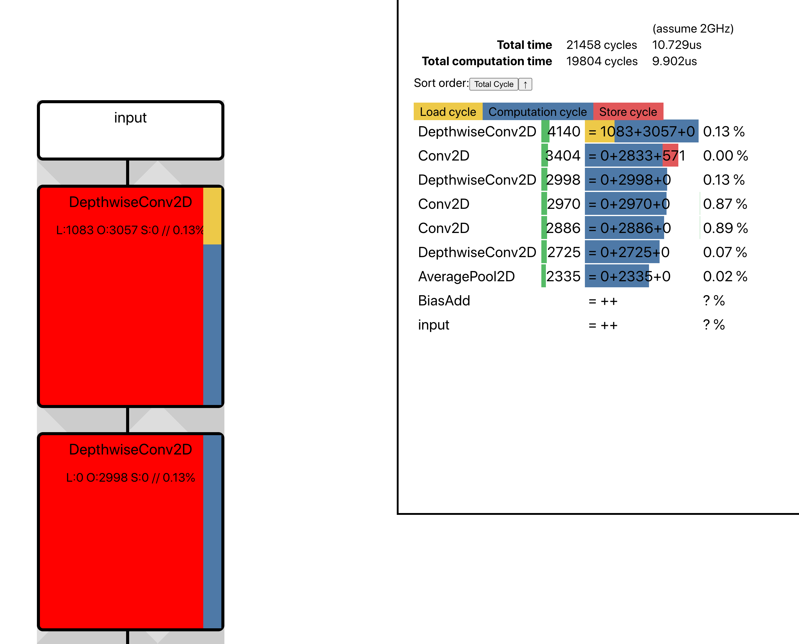

Command Line Tools Quickstart
FuriosaAI SDK provides a variety of command line tools to help compile, optimize and quantize models.
Since some command line tools function based on FuriosaAI’s web services, you need to set up an API key to use all the features. If you have not yet set up a key, refer to API Key Settings.
Installation
If the Python execution environment has not been set up, refer to Configuring the Python SDK Runtime Environment.
Install Command Line Tools
$ pip install 'furiosa-sdk[cli, validator]'
Verifying the Installation
$ furiosa version
Server version: 0.2.0 (rev: a4bbbb1b4 built_at: 2021-03-15T21:20:59Z)
Client version: 0.1.0
Command Quickstart
Checking the toolchain version
The toolchain command provides additional functions related to the toolchain.
Currently, it provides a function to print the version of the provided toolchains.
$ furiosa toolchain list
Available Toolchains:
[0] 0.1.0 (rev: 952707e5f built_at: 2020-12-15 23:38:22)
Model Compilation
The compile command creates a program that uses the FuriosaAI NPU by compiling models in
TFLite and ONNX formats. (Is it using the NPU to compile?*)
$ furiosa compile \
test_data/MNISTnet_uint8_quant_without_softmax.tflite
output.enf has been generated (elapsed: 513.661 ms)
The -o option specifies the location where the generated program binary will be saved.
$ furiosa compile \
MNISTnet_uint8_quant_without_softmax.tflite \
-o /tmp/mnist.enf
mnist.enf has been generated (elapsed: 513.661 ms)
The --conf option allows you to use yaml files when specifying different compiler options.
$ furiosa compile \
test_data/MNISTnet_uint8_quant_without_softmax.tflite \
--config test_data/compiler_config.yml
outout.enf has been generated (elapsed: 513.661 ms)
Checking the Model Fit
The validate command takes a TFLite or ONNX as an argument,
automatically quantizes it, and tries to compile to a final binary.
Success indicates that the model can be run on the FuriosaAI NPU..
$ furiosa validate yolov4.onxx
Passed!
$ furiosa validate efficientnet-lite4-11.onnx
Failed. The result has been written to validation.txt
$ cat validation.txt
Stdout:
[Step 1] Checking if the model can be transformed into a quantized model ...
Stderr:
/root/miniconda3/envs/furiosa/lib/python3.8/site-packages/onnx/__init__.py:97: RuntimeWarning: Unexpected end-group tag: Not all data was converted
decoded = cast(Optional[int], proto.ParseFromString(s))
[Step 1] Failed
Compilation Analysis and Optimization Tool
Both additional options given during compilation and separate commands generate NPU utilization level and model compilation process report for the compiled model.
The --mem-allow-report option for the compile command
generates a memory allocation report in HTML format.
$ furiosa compile \
MNISTnet_uint8_quant_without_softmax.tflite \
-o /tmp/mnist.enf \
--mem-alloc-report ./mem-report.html
The figure below is an example of the memory allocation report output.

The perfeye command predicts and outputs the
compiled model’s NPU utilization in operator units.
$ furiosa perfeye \
MNISTnet_uint8_quant_without_softmax.tflite \
-o output.html
output.html has been generated (elapsed: 510.783 ms)
The figure below is an example of a perfeye report.
